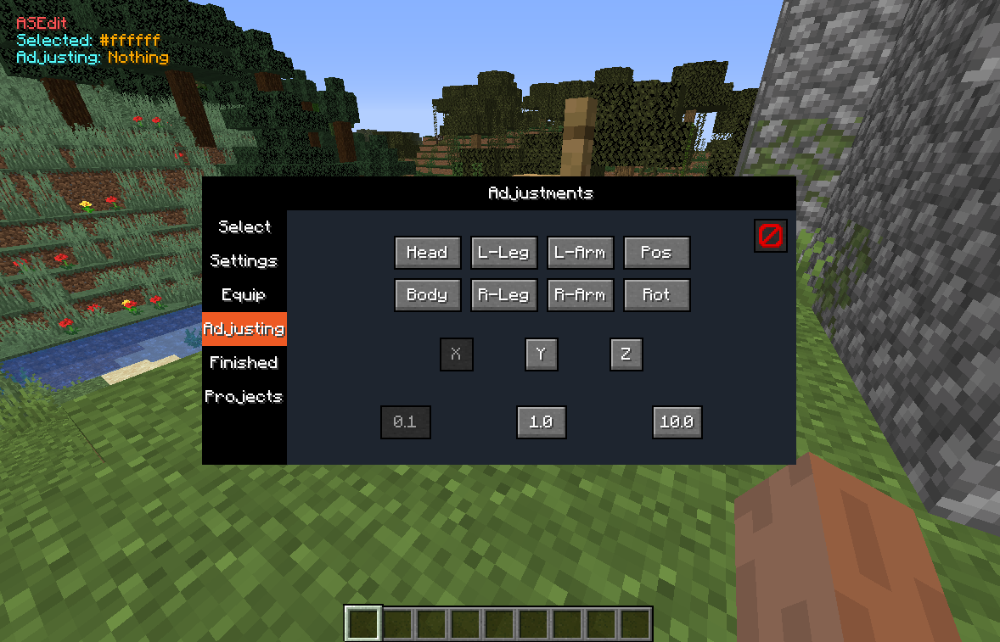

ASEdit - ArmorstandEditor
| Requirements | Description |
|---|---|
| Creative | The gamemode must be creative |
| Build rights | The user must be able to build in the world |
How to use
Activate the Module ASEdit in the Special tab.

It will create your first armor stand in the world.
It will also show all information in the upper right corner.

All armor stand's can only be seen and changed by you at first.
As soon as you press the F key, the editing window will open.

On the side you have a menu bar with all kind of options to modify your project.
On the Selection tab, you can manage your armor stand's.
You can create new armorstand's, clone, delete, reset or teleport them to you.

Your armor stand's properties can be edited on the Settings tab.
There you can also change the name.

You can equip your armor stand from the Equip tab or simply by equipping it manually.

The Adjusting tab is the most important one.
Here you can change the armor stand's position and rotation.
To do that just select the part you want to adjust, the axis and the speed.
Now you can adjust the parts using your mouse wheel.
Once your finished with your project, go to the Finished tab.
You can save your project to a file via the Save2File button.
Or you start creating you project via the create button. If you do this you get a armor stand and after you placed him you get the next one.

Your project's can be managed on the Projects tab.

If you have selected all armor stand's, you can move them all or rotate them on the Adjusting tab.
It is recommanded to checkout the Ghostsight module to make it easier adjusting the different parts.
The ASSave command is also good to look at.
Finally here is the download for the Tardis-project file.